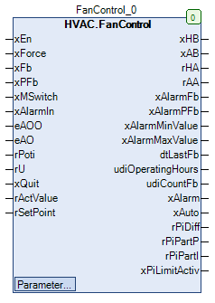

FanControl (FB)¶
FUNCTION_BLOCK FanControl
Short Description¶
Control of a variable speed fan ( controlled variable: absolute pressure, differential pressure )Additional functions: Manual overriding controls, repair switches, operating hours counters, operation monitoring, air shortage monitoring, limit value monitoringTypical application: control of a fan with frequency converter
Portrayal¶

Functional Description¶
General¶
Enable - Fan before manual override xAB¶
Enable - Fan after manual override xHB¶
xAB eManModeB xHB Notes
FALSE eMANBIN.Auto FALSE Manual override module in automatic mode
TRUE eMANBIN.Auto TRUE Manual override module in automatic mode
X eMANBIN.ManOn TRUE Manual override module in manual mode On
X eMANBIN.ManOff FALSE Manual override module in manual mode Off
Repair switch message xMSwitch¶
Forced shut-off of the fan after manual override xForce¶
Operating hours and switch-on procedures udiOperatingHours and udiCountFb¶
Write access to the counter readings
Prerequisite for using the FanControl function block
Date / time of the last operation of the fan dtLastFb¶
Operation monitoring xAlarmFb¶
Low air pressure monitoring xAlarmPFb¶
Collective alarm message 1 - Output xAlarm¶
Collective alarm message 2¶
Reset of the alarm messages xQuit¶
Pressure control process¶
Control signal for fan before manual override rAA¶
Control signal for fan after manual override rHA¶
rAA eManModeN rHA Notes
X eMANNUM.Auto rAA Manual override module in automatic mode
X eMANNUM.Man eManValue Manual override module in manual mode
Operating mode for the output signal of the controller ePIManModeN¶
ePiManModeN Output signal
Functional Description
eMANNUM.Auto Signal according to the formula / switch-off value
Automatic operation - Output signal
eMANNUM.Man ePiManValue Manual operation - Output signal
Monitoring of the maximum pressure xAlarmMaxValue¶
Monitoring of the minimum pressure xAlarmMinValue¶
Collective message automatic mode xAuto¶
Visualization¶
Codesys¶
- InOut:
Scope Name Type Initial Comment Input xEn BOOL Fan request ( FALSE = Off, TRUE = On )
xForce BOOL FALSE Forced shutdown of the fan after manual override ( FALSE = Off, TRUE = On )
xFb BOOL Operating message of the fan ( FALSE = Off, TRUE = On )
xPFb BOOL Feedback of the low air pressure monitoring ( FALSE = low air pressure, TRUE = no low air pressure )
xMSwitch BOOL TRUE Feedback of the repair switches ( FALSE = switch off, TRUE = switch on )
xAlarmIn BOOL Alarm message of the fan ( FALSE = Off, TRUE = On )
eAOO eManBin HVACTYPES.eManBin.Auto Operating mode of manual override - Hardware for enabling
eAO eManNum HVACTYPES.eManNum.Auto Operating mode of manual override - Hardware for the control signal
rPoti REAL Manual value - Manual override - Hardware for the control signal
rU REAL Feedback signal from the fan in %
xQuit BOOL FALSE Reset of the alarm messages ( monitoring ) ( FALSE = Off, TRUE = On )
rActValue REAL Actual pressure value in Pa
rSetPoint REAL Pressure setpoint ( absolute, difference ) in Pa
Output xHB BOOL Enable - Fan after manual override ( FALSE = Off, TRUE = On )
xAB BOOL Enable - Fan before manual override ( FALSE = Off, TRUE = On )
rHA REAL Control signal - Fan after manual override in %
rAA REAL Control signal - Fan before manual override in %
xAlarmFb BOOL Alarm message for the operation monitoring ( FALSE = Off, TRUE = On )
xAlarmPFb BOOL Alarm message for low air pressure monitoring ( FALSE = Off, TRUE = On )
xAlarmMinValue BOOL Alarm message for the minimum value monitoring ( FALSE = Off, TRUE = On )
xAlarmMaxValue BOOL Alarm message for the maximum value monitoring ( FALSE = Off, TRUE = On )
dtLastFb DT Date / time of last fan operation
udiOperatingHours UDINT Operating hours of the fan
udiCountFb UDINT Number of starts of the ventilator
xAlarm BOOL Collective alarm message ( FALSE = Off, TRUE = On )
xAuto BOOL Collective message - automatic mode ( FALSE = no automatic mode, TRUE = automatic mode )
rPiDiff REAL Control deviation at pressure Controller in Pa
rPiPartP REAL Proportional component of the control signal of the pressure controller in %
rPiPartI REAL Integral part of the control signal of the pressure controller in %
xPiLimitActiv BOOL Status - limit exceeded - control signal - pressure controller ( FALSE = no exceeding, TRUE = exceeding )
Input rMaxValue REAL 490 Maximum actual pressure value in Pa
blanc5 BOOL * Monitoring of the maximum actual pressure value *
rSubstituteHA REAL 30 Equivalent control signal in %
udiWaitMinValue UDINT 60 Waiting time until evaluation of the minimum value in s ( 1.0 - 600.0 s )
rMinHAValue REAL 20 Lower threshold value of the control signal for the substitute control signal in %
rMinValue REAL 20 Lower threshold value of the actual pressure value for the substitute control signal in Pa
blanc4 BOOL * Monitoring of the minimum value *
tYRampTime TIME TIME#1m0s0ms Time unit for the maximum change of the control signal in s
rYRampVariation REAL 30 Maximum change of the control signal per time unit in %
blanc3 BOOL * Ramp for the control signal *
udiWaitControl UDINT 30 Waiting time until pressure control is enabled in s ( 5.0 - 600.0 s )
blanc2 BOOL * Waiting time - Enable - Pressure control *
rYMax REAL 100 Pressure controller - Upper absolute limit value of the control signal in %
rYMin REAL 20 Pressure controller - Lower absolute limit value of the control signal in %
rTn REAL 60 Pressure controller - reset time in s
rKp REAL 1 Pressure controller - Gain factor
rOffset REAL 0 Pressure controller - Additive setpoint offset in Pa
rInitValue REAL 20 Pressure controller - Initialization value for the control signal in %
rYDisabled REAL 0 Pressure controller - Control signal when pressure Controller inactive in %
eAction eControlMode eControlMode.Inverted Direction of action of the pressure contrtoller ( Inverted, Direct )
ePiManValue REAL Pressure controller - Output signal of the Controller in manual mode in %
ePiManModeN eMANNUM eMANNUM.Auto Pressure controller - operating mode for the output signal of the controller ( Auto, Man )
blanc1 BOOL * pressure controller *
udiPFbControlTime UDINT 60 Signal delay of the low air pressure monitoring in s
xPFbControl BOOL TRUE Release of low air pressure monitoring ( FALSE = blocking, TRUE = release )
xAlarmControl BOOL TRUE Influence of xAlarm on xAB ( FALSE = no influence, TRUE = influence )
udiFbControlTime UDINT 60 Signal delay of operation monitoring in s ( 0.0 - 300.0 s )
xFbControl BOOL TRUE Enable / disable operation monitoring ( FALSE = Disable, TRUE = Enable )
eManValue REAL Control signal in manual mode for control signal rHA in %
eManModeN eMANNUM eMANNUM.Auto Operating mode of manual override for the control signal rHA
eManModeB eMANBIN eMANBIN.Auto Operating mode of manual override for the xHB digital output